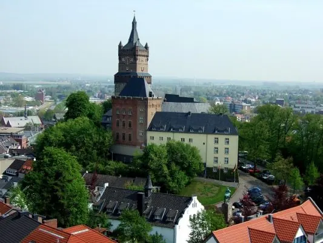

3x een leuke Bed and Breakfast in Wijchen
De meest opvallende oude bezienswaardigheid in Wijchen is het centraal gelegen Kasteel van Wijchen, dat voor het eerst genoemd wordt in archiefstukken uit…
Net buiten Nijmegen: Kleef, Groesbeek, Wijchen en andere dagtrips in de regio.
De meest opvallende oude bezienswaardigheid in Wijchen is het centraal gelegen Kasteel van Wijchen, dat voor het eerst genoemd wordt in archiefstukken uit…

Blijf je tijdens de vakantie graag dichtbij huis, maar wil je wel het gevoel hebben dat je er heerlijk tussenuit bent geweest? In de omgeving van Nijmegen…

Soms is het heerlijk om even de stad uit te gaan en een dag of weekend iets nieuws te ontdekken. Vanuit Nijmegen ben je in no time aan zee, in een…

Groesbeek is een dorp gelegen in Berg en dal, en staat bekend om zijn schilderachtige landschap. Het gebied omvat heuvels en dalen die gevormd zijn door…

Net over de grens, vlak bij Nijmegen ligt Kleef, of Kleve, zoals de Duitsers zeggen. Kleef is een leuk stadje om te bezoeken en een leuk uitje; het ligt…

Het originele en diverse bedrijf Dushi 2.0 is al een tijdje bezig bij recreatiegebied Mookerplas. Ze bieden veel verschillende arrangementen aan. Veel…